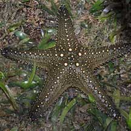
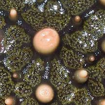
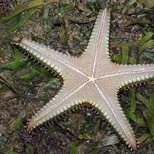
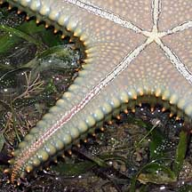
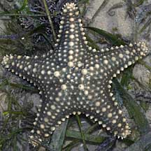
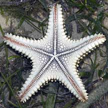

|
|
| sea stars text index | photo index |
| Phylum Echinodermata > Class Stelleroida > Subclass Asteroidea |
| Pentaceraster
sea star Pentaceraster mammillatus Family Oreasteridae updated Mar 2020 Where seen? This large sea star is a new record for Singapore! It was discovered in 2008 on Cyrene Reef, a submerged reef in the middle of our port. This sea star was previously known to exist only in the western Indian Ocean and the Red Sea, so its presence in Singapore waters represents a considerable range increase. Features: Diameter with arms to about 15cm. Hard, heavy body with long tapering arms that are thick and triangular in cross-section. It has a regular pattern of white rounded knobs on the upper surface. The underside is pale and it has pink tube feet. Baby stars: A small one (about 5cm wide) was seen at Cyrene Reef in Apr 2010. Does this mean that the sea stars are breeding there? |
 Cyrene Reef, Apr 08 |
 |
|
 |
 |
| Pentaceraster sea stars on Singapore shores |
On wildsingapore
flickr
|
| Other sightings on Singapore shores |
 A small one about 9cm in diameter.  Cyrene Reef, May 10 |
Links
|